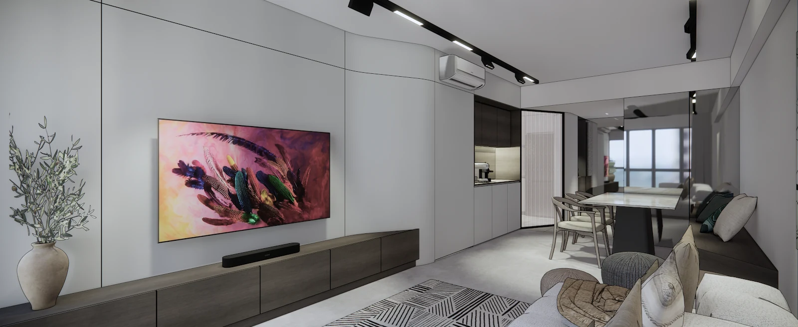

Punggol · In progress
Chef's Fillet
- Location
- Punggol
- Typology
- 4-room HDB
- Area
- 92 m²
- Scope
- Interior
- Status
- In progress
A four-room flat gives you a fixed envelope and a limited budget. The opportunity is in deciding where to spend both.
Here it goes into a single continuous move that links entrance, kitchen, dining and living into one legible space. Everything else stays quiet and pale, so the gesture does the work.